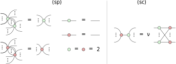

Chapter 4 CNOT circuits and phase-free ZX-diagrams
We now start our investigation into understanding quantum circuits and
quantum compiling by restricting ourselves to looking at circuits consisting
solely of CNOT gates. There are several reasons to do so, both from the
perspective of understanding quantum computing, and from the perspective of
understanding ZX rewriting. ZX-diagrams are a universal language for talking
about quantum computing. This makes them useful, but it also means
that for generic ZX-diagrams, we expect certain problems to be hard to
solve with rewriting. For example, if we could efficiently determine if two
different ZX-diagrams describe the same matrix, we can also determine
if two quantum circuits actually describe the same unitary. However,
we have good, complexity-theoretic reasons to believe that that is way
harder than anything even a quantum computer can do (much less a
classical one). As a special case, this would let us determine efficiently the
complex number described by a diagram with no inputs and outputs,
which would let us efficiently simulate quantum computers. This would of
course make the whole project of quantum computation (and essentially
the jobs of the authors of this book) pointless. Since we don’t believe
we can efficiently solve certain problems for any ZX-diagram, it makes
sense to restrict to classes of diagrams which can be reasoned about
efficiently. The restriction of the ZX-calculus to a family of ZX-diagrams that
is closed under composition and tensor product is a fragment of the
ZX-calculus. In this chapter we will look in detail at one of the simplest possible
fragments of the ZX-calculus: the phase-free ZX-calculus. This fragment
concerns ZX-diagrams where all the phases on the spiders are required
to be zero, and where we do not have Hadamard gates. The phase-free
diagrams turn out to behave very nicely, and we can rewrite them in various
fruitful ways. We will see in this chapter that phase-free diagrams whose
linear map is unitary correspond precisely to quantum circuits consisting
solely of CNOT gates, and hence analysing CNOT circuits boils down
to analysing phase-free diagrams. Understanding how to reason about
CNOT circuits is important for a variety of reasons. First, single-qubit
unitaries plus the CNOT gate form a universal gate set. This means we can
always write any quantum computation as a layer of single-qubit unitaries,
followed by a CNOT circuit, followed again by a layer of single-qubit
unitaries, then a CNOT circuit, and so on. Hence, in this view all the
interesting entangling operations happen in pure CNOT circuits (though as we
will see in later chapters, we might want to group our computation into
different types of layers of gates instead). Second, a pure CNOT circuit is
actually a classical circuit, meaning we can efficiently reason about it. In
particular, we can understand a CNOT circuit (and more generally a
phase-free ZX-diagram) through a connection to the two-element field
. Whereas
quantum theory primarily concerns itself with (exponentially large) matrices whose elements
are in , an
-qubit CNOT circuit can
be fully described by an
matrix over .
This connection gives us a way to resynthesise CNOT circuits, allowing us to
compile them efficiently using an algorithm based on Gaussian elimination. The
third reason to look at phase-free diagrams and CNOT circuits, is that we will
see the things we learn in this chapter crop up over and over again in
Chapters 5, 7, 11 and especially in Chapter 12 when we will see that the
important class of quantum error correcting codes known as CSS codes
correspond to phase-free diagrams.
4.1 CNOT circuits and parity matrices
In this section, we will see that the action of a CNOT circuit on
qubits can be succinctly
represented as an
matrix over the field
and how to translate to and from this representation.
4.1.1 The two-element field and the parity of a bit string
First and foremost: what is ?
Let’s give a formal definition.
Definition 4.1.1. The field with 2 elements
is defined as the set
which comes equipped with addition and multiplication operations defined
as:
and ,
where
and
are the XOR and AND operations defined on bits, respectively.
This may not look much like the fields of numbers you are used to—like the real numbers
, complex numbers
, or rational
numbers —but
just by thinking about the behaviour of XOR and AND, we can verify
all of the field axioms. First off, we can easily see that XOR and AND
are both associative, commutative, and have units 0 and 1 respectively:
But what about inverses? In a field, every number
has to have an
additive inverse
satisfying . A
special property of
is that every element is its own additive inverse. We have
, but also
. Furthermore,
for
to be a field, every non-zero number has to have a multiplicative
inverse. But here there is only one non-zero number:
, and clearly
. We sometimes refer
to an element in
as a parity. Parity is a property of bit strings: if a bit string contains
an even number of 1s, we say it has parity 0, whereas if it contain
an odd number of 1s, we say it has parity 1. For a bit string
, we can
compute the parity by taking the XOR of all of its bits, i.e. we sum up the bits as elements
of the field :
One is often interested not just in the overall parity of a bit string, but also
the parity of some subset of bits. This can be computed using simple matrix
operations. For example, we can express the operation of computing
the parity of the 1st, 3rd, and 4th bits of a 4-bit string as a row vector:
More generally, if we are interested in computing several parities at once, we
can arrange them in the rows of a matrix:
By saving or transmitting some parity information about a bit
string, we can often detect and correct errors. For example, if the bit
got lost in transmission, but we know the values of
and
, we can
recover
since .
Such basic operations are the basis of classical linear error correcting
codes, and as we’ll see in Chapter 12, also play a major role in quantum
error correction. However, before we get there, we’ll see a much more
immediate connection between parity matrices and quantum circuits: the
behaviour of a CNOT circuit can be exactly captured by an invertible parity
matrix.
4.1.2 From CNOT circuits to parity maps
The CNOT gate acts on a pair of qubits via
.
When we put multiple CNOT gates in a circuit, we can build unitaries that have
more complicated actions on the computational basis states. For instance,
suppose we have a CNOT from qubit 1 to 2, and then a CNOT from 2 to 1:
We can calculate its action on the computational basis state
as:
More generally, we can calculate the action of any CNOT circuit on a
computational basis state by labelling each of the input wires with a variable
, then
pushing those variables through the circuit:
(4.1)
That is, we work from left to right. When we
encounter a CNOT gate whose input wires are labelled
on the control qubit
and on the target
qubit, we copy the label
onto the output wire of the control qubit and write
on
the output wire of the target qubit. Once we get to the output of the circuit, we
will have calculated the overall action of the unitary on computational basis
states. For example, the circuit (4.1) implements the following unitary:
(4.2)
Generally we can describe the action of a CNOT circuit by a parity
map:
Definition 4.1.2. A parity map is a function
where
and each
calculates the parity of some of the input bits: .
By pushing variables through a circuit as in the example above, we can
straightforwardly calculate the parity map for any CNOT circuit. Hence, the
following proposition is immediate.
Proposition 4.1.3. Let
be an -qubit
CNOT circuit describing the unitary .
Then there is a parity map
such that for every computational basis state
we have .
Furthermore, the parity map totally defines the unitary associated with the
CNOT circuit. In particular, if we find another CNOT circuit with the same
parity map, it implements the same unitary. For example, the unitary
implemented by the CNOT circuit (4.1) could also be implemented by this much
smaller CNOT circuit:
(4.3)
By starting with a CNOT circuit, computing its parity map, then finding a
new circuit that implements that same parity map, we ended up with a circuit
that was a lot smaller, with just one CNOT gate rather than six. We call the
problem of generating a CNOT circuit that implements a given parity map the
CNOT circuit synthesis problem. In the next section, we will show that, as
long as a parity map is invertible, we can always synthesise a CNOT circuit that
implements it.
4.1.3 CNOT circuit synthesis
We can view a bit string as
a vector of the vector space .
With this in mind, it follows that parity maps, which only ever compute XORs of
their input bits, are actually linear maps over such vector spaces. Consequently,
we can always write them in matrix form.
Definition 4.1.4.A parity matrix is a matrix with entries in .
One can show straightforwardly that for any parity map
, we can find a
parity matrix
such that .
Indeed we saw an example of this in section 4.1.1 when we represented the parity
map:
with the matrix:
In the last section, we saw how to represent the action of a CNOT circuit as a
parity map. It will be convenient to write this map as a parity matrix. Since
CNOT circuits represent reversible computations on bits, their associated parity
matrices are always invertible.
Remark 4.1.5.Note that we now have two different ways to represent
CNOT circuits as matrices. On the one hand, treating them as quantum
circuits gives us a
unitary matrix
whose entries are all complex numbers .
These matrices always correspond to permutations of computational basis
states, so there is always a single 1 in each row and column and .
On the other hand, treating them as classical parity maps gives us a
invertible matrix
whose entries are bits .
In general, these can have multiple 1’s in any given row/column and
might not equal .
Thinking about the action of a single CNOT gate:
we get the parity map
and hence the following lower-triangular parity matrix:
Notably, since
in ,
this matrix is its own inverse:
This captures the fact that two successive CNOT gates cancel out. We can
generalise this to a single CNOT gate appearing in a larger circuit as
follows.
Example 4.1.6. For an -qubit
circuit, the parity matrix corresponding to a CNOT with the control on qubit
and the target on qubit
is the identity matrix with one additional
in the -th
column and the -th
row. We will denote this matrix by .
Just like with the matrix
above, we have .
You may have met matrices like these before in a linear algebra course.
Matrices that look like the identity matrix with the exception of one
additional non-zero value correspond to primitive row and column
operations used for Gaussian elimination. If I multiply a generic matrix
with
on the left, this has the
effect of adding the -th
row of to
the -th
row:
whereas if we multiply by
on the right, it has the effect of adding the
-th column
to the -th
column:
A general property of invertible square matrices is we can reduce
them to the identity matrix by means of primitive row operations or
primitive column operations. For a generic field, there are two kinds of
primitive row/column operations: multiplying a row/column by a
non-zero scalar and adding one row/column to another. This is what
happens when we apply the Gauss-Jordan reduction procedure,
sometimes called simply Gaussian elimination, to an invertible matrix. For
, there is only one
non-zero scalar, ,
so in fact the second kind is all we need. There are two, essentially equivalent
ways we can do Gauss-Jordan reduction, either working from the left side of the
matrix with row operations or the right side of the matrix with column
operations. Although it is the (slightly) less typical version, here we’ll use column
operations. This will make things easier when it comes to generalising to
bigger families of circuits in Chapter 7. Suppose we find any sequence of
primitive column operations that reduce a parity matrix to
the identity. Then we have a series of elementary matrices
such
that:
As we noted in Example 4.1.6, each of the elementary matrices is their own
inverse. So, we can move them to the other side of this equation, reversing the
order:
(4.4)
Hence, we can see Gaussian elimination as a way of decomposing
invertible matrices as a composition of elementary matrices. Since we know
that every parity matrix coming from a CNOT circuit is invertible and
that each elementary matrix corresponds to a CNOT gate, we see that
synthesising CNOT circuits from parity matrices amounts to Gaussian
elimination! We give the full synthesis procedure in Algorithm 1. Note we write
for a CNOT gate with a
control on the -th qubit
and a target on the -th
qubit.
_____________________________________________________________________
Algorithm 1: CNOT circuit synthesis by Gauss-Jordan
reduction____________________________________________________________________________________
Input: An
invertible
parity
matrix
Output: A
CNOT
circuit
implementing
Procedure CNOT-SYNTH()
let
be
an
empty
circuit
on
qubits
forÂ
to
 do
// forward
part
if then
// ensure
that
a
1
is
on
the
diagonal
find
such
that
add
column
of
to
column
append
to
end
forÂ
to
 do
if then
add
column
of
to
column
append
to
end
end
end
forÂ
to
 do
// backwards
part
for do
if then
add
column
of
to
column
append
to
end
end
end
returnend_____________________________________________________________________________
Proof.This algorithm produces one CNOT gate corresponding to each elementary
column operation in the decomposition of
from equation 4.4. Hence, the overall effect of
on a computation basis input will be the composition of these elementary
matrices, which is .
□
Exercise 4.1.Consider the following CNOT circuit:
a)
Calculate the parity matrix of this circuit.
b)
Resynthesise a new equivalent CNOT circuit from this parity matrix by
using Algorithm 1.
4.2 The phase-free ZX calculus
figure

Figure 4.0: The rules of the phase-free ZX calculus: the
spider rules (sp) and strong complementarity (sc). Note the
righthand-side of the (sc) rule is a complete bipartite graph of
Z spiders and
X spiders, with a normalisation factor
,
which we typically drop when scalar factors are irrelevant.
Now that we understand CNOT circuits and their relationship to parity
matrices a bit better, let’s turn our attention to phase-free ZX-diagrams and the
phase-free ZX calculus. As we noted at the beginning of this chapter, phase-free
ZX-diagrams are those without Hadamard gates and whose spiders all have phase
0. It turns out that once we make this restriction, one can simplify the rules a
great deal. As we’ll see in Section 4.3.1, the rules in Figure 4.0 suffice to prove
any true equation between phase-free ZX-diagrams. We will see in this section
and the next that the phase-free ZX calculus encodes a great deal of
information about CNOT circuits, and more generally linear algebra over
. To
start to get an idea of why this is the case, we’ll temporarily introduce some
phases into X spiders to represent basis states, and recap some of the things we
already saw in the previous chapter. Recall that we can represent the two
-basis states as X-spiders,
with a phase of
or ,
respectively:
where ‘‘
here means we are ignoring the scalar factor. Due to this fact, it will be
convenient to represent computational basis elements using a boolean variable
:
A Z-spider acts on a computational basis state by copying it through, while
an X-spider calculates the XOR of its inputs:
The latter follows from the fact that, for boolean variables
, we
have ,
modulo .
Recall what the CNOT gate looks like as a ZX-diagram:
With the interpretation of the Z-spider as copying and the X-spider as XOR
we see that we can interpret this diagram as saying that we first copy the first
bit, and then XOR it with the second bit, and this is indeed how we understand
the functioning of the CNOT:
It turns out that this idea generalises to describe the action of an
arbitrary parity matrix in the following way: suppose we have an
parity
matrix ,
then its corresponding ZX-diagram is given by
one Z-spider connected to each input
and one X-spider connected to each output ,
a connection from the th
Z-spider to the th
X-spider if and only if .
Another way to say this is that the biadjacency matrix of the connectivity from
the Z-spiders to the X-spiders is equal to the parity matrix. This biadjacency
matrix has a row for each X-spider, and a column for every Z-spider, and there is
a in the
matrix when the corresponding Z-spider is connected to the corresponding X-spider,
and a
if they are not connected. Just like for CNOT circuits in the previous section, the
parity matrix of a ZX-diagram in parity form exactly captures the action of the
associated linear map on computational basis states.
Example 4.2.1.We have the following correspondence between this parity
matrix and a ZX-diagram:
(4.5)
From the parity matrix, we can compute the action of the linear map on basis
states :
In other words, the linear map depicted above acts as follows on basis states:
We can check this by inputting a computational basis state, expressed in
terms of X-spiders and reducing:
It will be helpful to have a name for diagrams such as the one depicted in
equation (4.5) above.
Definition 4.2.2. We say a phase-free ZX-diagram is in parity normal form
(PNF) when
every Z-spider is connected to exactly one input,
every X-spider is connected to exactly one output,
spiders are only connected to spiders of the opposite colour and via at
most one wire.
If a diagram is in PNF, the only relevant information is the number of
inputs, number of outputs, and which inputs are connected to which outputs.
Hence biadjacency matrices are in 1-to-1 correspondence with ZX-diagrams in
parity normal form. Parity matrices and parity normal forms will play a role
throughout this book, especially in this chapter and Chapters 7, 11, and 12.
Hence, we will introduce some special notation for them that we call a matrix
arrow:
(4.6)
Note how we use a bold wire labelled
to
represent
qubit wires:
(4.7)
Rather than a single qubit, such a bold wire represents a register of qubits. We will
sometimes drop the
if it is not important or clear from context. We represent the connectivity of the
Z spiders at
the input to the
X spiders at the output with the bi-adjacency matrix
. The
columns of
correspond to inputs, the rows correspond to outputs, and
if and only if the Z spider on
the -th input is connected
to X spider on the -th
output. Concretely, Eq. (4.6) corresponds, up to scalar factors, to a linear map that
acts as
on computational basis vectors:
(4.8)
From equation (4.8), we can see that composing parity maps amounts to
taking the matrix product:
(4.9)
We can also prove this diagrammatically by unrolling the definitions and
using strong complementarity on all the intermediate spiders.
Example 4.2.3. Consider the following two matrices and their
matrix product:
We can use
and
to define two parity maps, and apply the ZX rules to reduce their
composition to parity normal form:
Then, we obtain the matrix product as in (??). One way to understand why
this works is to think of the strong complementarity rule as performing a
single variable substitution involved in computing the composition of two
parity maps. For example, the first strong complementarity application
above, followed by spider fusion, amounts to replacing all occurrences of
in the
outputs with :
By the time we substitute all of the
’s for
’s, we
will have fully composed the two linear maps. But then, a convenient way to
calculate all the substitutions involved in composing two linear maps is just
matrix multiplication!
In the example above, we showed how in one case, the phase-free rules can
be applied to the composition of two PNFs to obtain a normal form.
This is a special case of a general strategy, where any ZX diagram can
be reduced to (a generalisation of) PNF, which we’ll see in the next
section.
4.2.1 Reducing a ZX-diagram to normal form
We have now seen that we can represent a CNOT circuit as a parity matrix and
parity matrices as ZX-diagrams in parity normal form. Additionally, using
Gaussian elimination we can go back from this parity form to a CNOT circuit.
There is just one step missing in this trifecta of representations: how to reduce a
unitary phase-free ZX-diagram to parity normal form. This is what we will do in
this section. Apart from it being useful to understand how CNOT circuits relate
to ZX-diagrams, it will also give us a first taste about how to define
simplification strategies in the ZX-calculus. The first step in this process of
simplification will be to bring the ZX-diagram into a more canonical
form.
Definition 4.2.4. We say a ZX-diagram is two-coloured when
1..
no spiders of the same colour are connected to each other,
2..
there are no self-loops,
3..
there is at most one wire between each pair of spiders,
4..
there are no Hadamards.
We call such diagrams two-coloured because we can view them as simple
graphs (where the spiders are the vertices) with a two-colouring (corresponding
to the colours of the spiders).
Lemma 4.2.5. Any ZX-diagram (not just a phase-free one) can be
efficiently simplified to a two-coloured one.
Proof.Given a ZX-diagram we do the following rewrites. First, if there are
any Hadamards, we decompose them into spiders using ,
so that the diagram will only contain actual spiders. Then we apply
wherever we can. As a result, no two spider of the same colours are connected
to each other in the resulting diagram (since otherwise we would have fused
them). Second, we apply Eq. (3.39) to remove all self-loops on the spiders, so
that the resulting diagrams has no self-loops left. Finally, whenever there is
more than one connection between a pair of spiders, we apply complementarity (3.64)
in order to remove a pair of these connections. This can always be done since
the connections must necessarily be between spiders of different colours. □
Given a phase-free ZX-diagram we can apply the above procedure to reduce it
a two-coloured diagram. This diagram will of course still be phase-free. Now we
will apply rewrites to this diagram that bring it closer to parity normal form. In
the parity normal form, all Z-spiders are connected to an input, while all
X-spiders are connected to an output. So, ‘bringing it closer’ to the normal form
means reducing the number of Z-spiders that are not connected to an input or
reducing the number of X-spiders not connected to an output. The way we
do this will be to strategically apply the strong complementarity rule
.
Definition 4.2.6. We say a spider is an input spider, respectively
output spider when it is connected to at least one input, respectively
output. If a spider is neither an input spider nor an output spider, it is called
an internal spider.
Definition 4.2.7. We say a phase-free ZX-diagram is in generalised parity
form when it is two-coloured and
1..
every input is connected to a Z-spider and every output to a X-spider,
2..
every spider is connected to at most 1 input or output,
3..
there are no zero-arity (i.e. scalar) spiders, and
4..
no internal spiders are connected directly to each other.
To phrase the condition above in a different way, it is saying that there are only
two kinds of Z-spiders: input Z-spiders and internal Z-spiders directly connected
to output X-spiders. A similar categorisation applies to X-spiders, reversing the
role of inputs/outputs. Hence, the generalised parity form looks like this, for
some :
(4.10)
What makes this form “generalised†as opposed to diagrams in
parity normal form is the possibility of some internal spiders. When
, we
get exactly the parity normal form. In Algorithm 2 we show how to
efficiently transform a phase-free ZX-diagram into generalised parity form.
_____________________________________________________________________
Algorithm 2: Reducing to generalised parity form____________________________
Input: A
phase-free
ZX-diagram
Output: A
phase-free
ZX-diagram
in
generalised
parity
form
1..
Apply
as
much
as
possible
and
remove
zero-arity
spiders
by
multiplying
the
overall
scalar
by
2.
2..
Try to apply
where
is
not
an
input
and
is
not
an
output.
3..
If was
applied at step 2, go to step 1, otherwise go to step 4.
4..
Use in
reverse to ensure inputs are connected to Z-spiders, outputs are connected
to X-spiders, and that no spider is connected to multiple inputs/outputs.
Lemma 4.2.8. Algorithm 2 terminates efficiently with a ZX-diagram in
generalised parity form.
Proof.Note that step 1 always removes spiders from the diagram. Step 2
will remove a pair of spiders, but it will introduce new Z-spiders on all
the neighbours of and new X-spiders on all the neighbours of
. Since is not an output, the only possibility
is that the new Z-spiders will be inputs or they will be adjacent to other
Z-spiders. In the latter case, they will get removed by spider fusion when
step 1 is repeated. Hence, step 2 removes a non-input Z-spider without
introducing any new non-input Z-spiders. This shows that the algorithm
terminates after a number of iterations of steps 1–3 bounded by the number
of non-output Z-spiders, where each of steps 1–4 takes polynomial time (in
the number of spiders), so the whole algorithm terminates in polynomial
time. The main loop in Algorithm 2 will only terminate once condition 4
of Definition 4.2.7 is satisfied, and since it applies step 1 just before exiting
the loop, it will be in two-coloured form. Finally, step 4 ensures condition 1
is satisfied while preserving the other conditions. □
Exercise 4.2.Show how Step 4 in Algorithm 2 works. That is, show that
we can use
in reverse to fix (1) cases where inputs/outputs are not connected to the
correct type of spider and (2) cases where multiple inputs/outputs connect
to the same spider.
Now, why do we care about generalised parity form? Well, it turns out that
if the diagram describes a unitary, that such a diagram must be in parity normal
form.
Proposition 4.2.9. Let
be a diagram in generalised parity form:
If is an
isometry, then
and if it is unitary .
In particular, a unitary in generalised parity form is already in parity normal
form.
Proof.We first need to show that if
is an isometry then .
That is, every X-spider is connected to an output. Suppose there is an X-spider that
is not connected to any output. By assumption we don’t have any floating scalar
spiders, so it must be connected to at least some Z-spiders. Since the diagram is
in generalised parity form, these must then all be input Z-spiders. Input a
to one of the input Z-spiders that the X-spider is connected to and
to
all the others. Then after copying states and fusing spiders there is a
phase
on the X-spider:
Hence, we have some input state that is mapped to zero, which contradicts
being an isometry. So all X-spiders must be connected to an
output, and hence to a unique one by the previous paragraph. If
is furthermore unitary, then we can similarly show that
, i.e. that
each Z-spider must be connected to an input. If this were not the case, we can
plug
into a subset of the output qubits to send the whole diagram to
,
which contradicts unitarity (since unitaries also preserve the norm of bras, and
not just kets). □
Theorem 4.2.10. Any unitary phase-free ZX-diagram can be efficiently
rewritten in parity normal form.
Proof.First use Lemma 4.2.5 to reduce it to two-coloured form. Then
apply Algorithm 2 to reduce it further to generalised parity form. Since
the diagram is unitary, it must then already be in parity normal form by
Proposition 4.2.9. □
Exercise 4.3.Prove that phase-free ZX-diagrams are invertible if and only
if they are unitary. Hint: Look closely at the assumptions that are needed to
make the proof of Proposition 4.2.9work.
4.2.2 Graphical CNOT circuit extraction
In this section, we will see that we can derive the exact same CNOT circuit
synthesis procedure from Section 4.1.3 starting with ZX-diagrams in parity
normal form and applying strong complementarity to extract a CNOT circuit via
Gaussian elimination. While the ZX reformulation doesn’t tell us something new
about the specific case of CNOT circuits per se, we will see this basic graphical
technique appearing in various guises throughout the book, so it will be
instructive to work through it explicitly here. For instance, if we have
a diagram that is more complicated, but locally has a part that looks
like like a parity normal form, then we can still (partially) apply the
graphical Gaussian elimination strategy. The key point to the proof is
to realise that the phase-free ZX-calculus already ‘knows’ how to do
-linear
algebra. To get started, we’ll see that we can prove that CNOT matrices perform
elementary column operations on parity matrices using just the ZX rules. First of
all, what does this look like graphically? In a parity normal form, the Z-spiders
correspond to columns of the biadjacency (i.e. parity) matrix, and the wires
coming out of the Z-spider correspond to 1’s in that column. In order to see a
CNOT as performing a column operation, we should therefore see that
pre-composing two Z-spiders by a CNOT has the effect of “adding” the
connections of one spider to the other, modulo 2. That is the content of the
following lemma.
Lemma 4.2.11. The following identity holds in the ZX-calculus:
Proof.
□
This lemma says that when we apply a CNOT to a pair of inputs in a
diagram in parity normal form that we can ‘absorb’ this CNOT at the
cost of changing the connectivity of the diagram. In the case of parity
normal form diagrams, this change in connectivity corresponds precisely to
an elementary column operation. This is easiest to see by means of an
example.
Example 4.2.12. Consider the following ZX-diagram in parity normal form,
and its associated biadjacency matrix:
For unitaries, this matrix will always be a square and invertible. Since
the matrix is invertible, we can always reduce it to the identity using
primitive column operations, which in turn correspond to pre-composing with
CNOT gates. For example, consider this sequence of column operations:
This corresponds to a sequence of applications of Lemma 4.2.11, where each
one introduces a CNOT gate and changes the connectivity of the rest of diagram:
Here, the diagram to the right of the dashed line is always in PNF, and its
connectivity corresponds exactly to the intermediate steps of the Gauss-Jordan
reduction.
As we noted in Section 4.1.3, whenever a parity matrix is invertible, it is
possible to reduce it all the way to the identity using just elementary column
operations. Hence, the following proposition follows immediately.
Proposition 4.2.13. A ZX-diagram in parity normal form whose
biadjacency matrix is invertible can be diagrammatically rewritten into a
CNOT circuit.
Exercise 4.4.We need the assumption that the biadjacency matrix is
invertible. Generate the parity normal form diagram of the following
parity matrix and try to apply the strategy above. What goes wrong?
Exercise 4.5. Show that a ZX diagram in PNF is unitary if and if only
its biadjacency matrix is invertible.
Combining Lemma 4.2.8 and Proposition 4.2.9 we see that we have a
strategy for simplifying any unitary phase-free ZX-diagram to parity
normal form. Additionally, such a diagram is equivalent to a CNOT
circuit.
Theorem 4.2.14. Any unitary phase-free ZX-diagram can be efficiently
rewritten into a CNOT circuit.
Proof.By Theorem 4.2.10 a unitary phase-free diagram can be simplified
to parity normal form. By Exercise 4.5, we know the associated biadjacency
matrix is invertible, hence we can apply Proposition 4.2.13 to extract a
CNOT circuit. □
As CNOT circuits themselves are unitary phase-free ZX-diagrams, this
theorem gives us an evident technique for a purely ZX-based method for
optimising CNOT circuits: from a CNOT circuit compute the PNF, then
re-extract using strong complementarity as in Example 4.2.12.
Exercise 4.6. If the diagram
is an isometry, then it can be written as:
where
is in parity normal form with an injective parity matrix
.
Using this fact, show that we can then furthermore write
as follows, in terms of a unitary phase-free diagram
:
4.3 Phase-free states and
linear subspaces
Let’s have a look again at the generalised parity form (4.10):
In the previous section, we focussed on the special case where the phase-free
ZX-diagram diagram describes a unitary, in which case we must have
. We now
turn to a different special case, where the ZX-diagram depicts a state. In this
case, ,
and hence up to scalar factors, we can also take
. Hence, we are only left
with a layer of internal Z
spiders, followed by a layer of
output X spiders:
(4.11)
Note that we could still represent such a diagram by its biadjaceny matrix,
but columns correspond to internal Z spiders rather than inputs. In particular
the order of the columns no longer matters, so rather than representing such a
diagram as a matrix, it makes more sense to represent it simply as a set of
-vectors.
Definition 4.3.1. The Z-X normal form of a phase-free ZX-diagram
state consists of a row of internal Z spiders connected to a row of X spiders
each connected to precisely 1 output. It can be described as a set of vectors
over
where
if and only if the -th
internal Z spider is connected to the -th
X spider.
At this point, the careful reader may note that a Z-X normal form might contain
more than one Z spider connected to the exact same set of X spiders. From this, one
might think we should actually describe the Z-X normal form by a multi-set of
-vectors,
i.e. a set that allows duplicate elements. However, thanks to the rules of the
phase-free ZX calculus, we can always remove spiders corresponding to duplicate
bit-vectors.
Exercise 4.7.Show, using the phase-free ZX calculus, that:
(4.12)
Unlike the parity form, the Z-X normal form is not unique. However, we will
soon see that it is straightforward to discover when two Z-X normal forms
actually describe the same state, and how in that case we can transform one into
the other. The key point is to realise that the important information captured in
is not the set itself, but
rather the subspace
of spanned by it. The
usual way to define
is as the set of all of the possible linear combinations of
:
Equivalently, since the field is ,
we can think of
as the set of all vectors obtained by XOR-ing any subset of
,
including the zero vector (which corresponds to XOR-ing the empty set). Since
is a finite field,
any subspace of
(including
itself) is a finite set of vectors, so we can compute it explicitly. For example:
(4.13)
Let’s look at the Z-X normal form corresponding to the pair of vectors on the
lefthand-side of (4.13).
We can compute the state explicitly by expanding each Z spider as a sum
over X spiders:
(4.14)
The result is precisely the sum over all of the vectors in the subspace (4.13),
written as elements of the computational basis. This is true in general, as stated
in the following theorem.
Theorem 4.3.2. For any Z-X normal form described by a set of
-vectors
, we
have:
(4.15)
This can be seen by direct calculation similar to (4.14), by expanding each of the Z
spiders as a sum
and using the fact that X spiders act like XOR.
Exercise 4.8.Complete the proof of Theorem 4.3.2.
Theorem 4.3.2 says that the state associated with an
-qubit
Z-X normal form is uniquely described by an
-linear
subspace
of .
From the Z-X normal form itself, we can read off a spanning set of vectors for
. As a
result, we are not too far from showing completeness of the phase-free ZX
calculus.
4.3.1 Phase-free completeness
Recall that a completeness theorem states that if any two diagrams
correspond to the same linear map, one can be transformed to the other
just using graphical rules. In this section, we will prove completeness of
the phase-free ZX-calculus for the fragment of phase-free ZX-diagrams.
Since we have already shown that phase free states correspond to linear
subspaces and their associated Z-X normal forms correspond to sets of vectors
spanning those spaces, the only thing left to do is show that we can
transform one spanning set into another using just the phase free ZX
rules.
Proposition 4.3.3. Let
and be two sets
spanning the same -linear
subspace .
Then can be
transformed into
by
1..
adding or removing the zero vector, or
2..
replacing a pair of vectors
with the pair
zero or more times.
We will omit the proof here, as it is a standard result in linear
algebra. Note that usually case 2 consists of replacing the pair
with
for some
non-zero scalar .
But in , the only
non-zero scalar is ,
so this simplifies. We can now prove the following lemma by reproducing the two
cases of Proposition 4.3.3 using the ZX calculus.
Lemma 4.3.4. Let
and
describe two Z-X normal forms on
qubit space. If the sets
and
span the same subspace of ,
one can be transformed into the other, up to a scalar factor.
Proof.We will show that the Z-X normal form for
can be transformed into that for
using the two cases described in Proposition 4.3.3. First, note that adding
or removing a zero vector corresponds to adding or removing a zero-legged Z
spider, which simply adds or removes a scalar factor of .
Hence, it suffices to show that we can transform a pair of Z-spiders described
by the vectors
into Z spiders described by .
That is, we can “add” the wires of one spider to the other one, modulo 2.
We can see this by splitting the X spiders into 3 groups: those connected to
,
those connected to ,
and those connected to both. We can then perform the vector addition by
two applications of the (sc) rule. First, we apply the rule in reverse:
then forward:
□
Proposition 4.3.5. If two phase-free ZX-diagram states describe the same
linear map, one can be rewritten into the other using only the rules in
Figure 4.0.
Proof.Suppose two diagrams describe the same quantum state. Then, they
can both be brought into Z-X normal form. By equation (4.15), their associated
-vectors
must span the same linear space .
Hence, by Lemma 4.3.4, one can be transformed into the other. The rules
we used were only accurate up to scalar factors, however if the states are
exactly equal, then once the non-scalar portion of the diagram is made equal,
these ignored scalar factors must then also be exactly equal. □
We now have completeness of the phase-free ZX-calculus for states. To get
the full completeness result we need to show how to adapt this to work
for arbitrary diagrams. Because we can just bend wires this is not too
hard.
Theorem 4.3.6 (Completeness of phase-free ZX). If two
phase-free ZX-diagrams describe the same linear map, one can be rewritten
into the other using only the rules in Figure 4.0.
Proof.Suppose the phase-free diagrams
and
are equal as linear maps. Then we know if we bend all the input wires to
be output wires so that they are both states, that we still have equality.
Additionally, because of completeness for states, we know that we can
then rewrite one into the other. We can use this to show we can rewrite
into
diagrammatically:
Here we marked with a dotted box the states that we rewrite into each
other using the completeness for phase-free states (Proposition 4.3.5)
□
In this proof we implicitly rewrote the “state form†of
and
into
the Z-X normal form. If we take this normal form, and bend the input wires back
we get a diagram that looks like the following:
(4.16)
We then have a layer of X-spiders connected to both the inputs and outputs,
and these are connected via some internal Z-spiders. This is hence an alternative
normal form for phase-free diagrams.
4.3.2 X-Z normal forms and orthogonal subspaces
All of the rules of the ZX calculus are colour-symmetric, so we could just as
well obtain a normal form for phase-free ZX-diagrams consisting only
of a row of internal X-spiders and a row of boundary Z-spiders. One
way to see this is to start yet again from the generalised parity form:
and set
this time. We’ll obtain a colour-reversed, mirror image of the Z-X normal form
from (4.11):
(4.17)
Just like before, we can describe this object by a set of bit-vectors
.
Definition 4.3.7. The X-Z normal form of a phase-free ZX-diagram
consists of a row of internal X spiders connected to a row of Z spiders,
each connected to precisely 1 input. It can be described as a set of vectors
over ,
where
if and only if the -th
internal X spider is connected to the -th
Z spider.
Suppose we plug some basis state
into
an X-Z normal form. The result will be a scalar, which depends on the XORs of
some subsets of the input bits. For example:
If either of the scalar X spiders has a phase of
, the whole
thing goes to zero. If both X spiders have a phase of 0, then the scalar equals a fixed
non-zero value .
In other words, the result is non-zero precisely when a collection of parities of
input variables all equal zero. Hence, we can write the linear map as follows:
Recalling that in ,
and the only possible coefficients in a linear equation are zero
and one, requiring a set of parities to all be zero is the same
thing as saying we have a solution to a system of homogeneous-linear
equations. The term homogeneous just means all the righthand-sides are equal
to zero, and famously the set of solutions to a homogeneous system of equations
always forms a subspace. A handy perspective on a system of homogenous equations
is to think of them as a spanning set of vectors for the orthogonal subspace, or
“perp”,
of ,
defined this way:
Then, note:
So, giving a spanning vector for
is really just giving a
list of coefficients
for a linear equation. Rewriting the example above in terms of
, we
have:
Exercise 4.9.Show that this interpretation for X-Z normal forms is true in
general, namely that:
(4.18)
As in the case for spanning sets of vectors for
, there are many choices
of spanning set for ,
which correspond to equivalent systems of linear equations. For example, adding
one of the equations in a system to another one doesn’t change the set of
solutions:
Such a move just corresponds to changing the spanning set for
:
which, like in the Z-X case, can be replicated graphically thanks to strong
complementarity:
Exercise 4.10.Prove the two equations above using strong
complementarity.
Exercise 4.11.Prove the general case of changing a basis for
using strong complementarity. Use this to give an alternative proof of the
phase-free completeness Theorem 4.3.6 that relies on the X-Z normal form.
The fact that we ended up writing X-Z normal forms as bra’s rather than
ket’s is just an artifact of the convention we chose back in Section 4.2.1 to get Z
spiders on the left and X spiders on the right in our generalised parity form.
Everything in ZX is colour-symmetric, so we could have just as well done this the
other way around to obtain an X-Z normal form for states. Hence, we actually
get two equivalent ways to represent a state: the Z-X normal form and the X-Z
normal form:
It is important to note that, most of the time, the number of vectors in these
two forms will be different. For example, the GHZ state, given by the subspace
has
this Z-X normal form:
whereas ,
so it has this X-Z normal form:
But of course, these two are equal, thanks to the rules of the ZX
calculus:
This relationship between the Z-X and X-Z normal form will come
in handy when we start thinking of quantum error correcting codes in
Chapter 12.
Exercise 4.12.Give the Z-X and X-Z normal form for the 4-qubit GHZ
state .
4.3.3 Relating parity matrices and subspaces
We’ve seen that phase-free unitaries can be represented efficiently as
linear maps and phase-free states can be represented as
linear
subspaces. So, a natural question is: what happens when we hit a phase-free state
with a phase-free unitary? You may not be particularly surprised to find out that
we can compute the subspace of the resulting state as the direct image of
the original subspace. That is, for a phase-free unitary with parity map
:
and a phase-free state corresponding to a subspace
:
we have that
gets mapped to a new phase-free state described by the subspace
:
(4.19)
In fact, this just follows from linearity, and the fact that
(which is injective) never takes two bit strings to the same place:
Exercise 4.13.Consider the following phase-free state, corresponding to the
subspace :
Compute
for the following phase-free unitaries:
using the ZX calculus.
4.4 Summary: What to remember
1..
An -qubit CNOT circuit
corresponds to an
parity matrix: a matrix over the field with 2 elements
.
2..
A CNOT circuit can be synthesised from a parity matrix using Gaussian
elimination (Algorithm 1). This then results in a circuit containing at
most
CNOT gates.
3..
Phase-free ZX-diagrams are those diagrams where all the phases on the
spiders are zero. We can represent a CNOT circuit as a phase-free
ZX-diagram. Rewriting phase-free ZX-diagrams can be done using a small
rule set (Figure 4.0), essentially just consisting of spider fusion and strong
complementarity.
4..
When we fuse all spiders that can be fused in a phase-free diagram, we
get a two-coloured diagram (Definition 4.2.4). When we then apply
strong complementarity between all Z-spiders that are not inputs, and
X-spiders that are not outputs, we can reduce the diagram to a normal
form we call the generalised parity form.
The generalised parity form has several special cases we care about.
5..
A unitary phase-free diagram in generalised parity form is necessarily in
parity normal form (Definition 4.2.2). Parity normal forms are in
one-to-one correspondence with parity matrices.
6..
We can directly represent a parity matrix as a diagram, using some special
notation we call a matrix arrow (Eq. (4.6)).
The bolded edges represent a ‘bundle’ of qubit wires, with the number of
wires denoted on top of it.
7..
We can implement the CNOT circuit synthesis algorithm through
Gaussian elimination graphically, by applying strong complementarity
(Example 4.2.12) to extract CNOTs from a parity normal form. This
additionally shows that unitary phase-free diagram is in fact equivalent to a
CNOT circuit.
8..
For states, reducing a diagram to generalised parity form in fact reduces it
to a special form we call the Z-X normal form, wherein we have a layer of
internal Z-spiders that are connected to a layer of boundary X-spiders
(Definition 4.3.1).
9..
Alternatively, we can also rewrite to X-Z normal form, where the role of
the colours are reversed (Definition 4.3.7). While the Z-X normal form
describes a state that is a superposition over a linear space of bit strings
given by the span of the vectors described by the connectivity of the
Z-spiders, the X-Z normal form instead describes the orthogonal
complement of the span.
4.5 Advanced Material*
4.5.1 Better CNOT circuit extraction*
In the discussion on universal gate sets in Section 2.3.5 we saw that the only
multi-qubit gate we need is the CNOT gate. In current physical devices
entangling gates are harder to implement than single-qubit gates, incurring more
noise and taking a longer time to execute. All this is to say that CNOT gates are
important, and we should think hard about how we can optimise their use as
much as possible. We saw in this chapter that we can always resynthesise a
CNOT circuit using Gaussian elimination. Whereas a starting CNOT circuit can
be as long as we want, with this resynthesis we can get a definite bound on how
long the circuits can get. Each row operation in the elimination procedure
gives us one CNOT gate. The question then is: how many row operations
do we need in the worst case? Let’s suppose we have some arbitrary
parity matrix. We will find an upper bound to how many row operations we need
to reduce it to the identity matrix. Let’s recall the distinct steps of Gaussian
elimination. For every column we need to make sure there is a 1 on the diagonal.
Then we eliminate all the elements on the column below the diagonal. Once we
have done this with every column, the matrix is in upper-triangular form. We
then need to do the same elimination, column-by-column, for all the elements
above the diagonal. The first column in the first stage then gives us at most
row operations: 1 for correcting the diagonal, and
for
correcting all the elements below the diagonal. Similarly, the second column takes
operations. Reducing the matrix to upper-triangular form hence takes
, where
this last
comes from the fact the final column will already have a
on the diagonal when we are doing elimination and the matrix is
full rank. To reduce the rest of the matrix we no longer have to
correct the diagonal, and hence fixing the last column only takes
operations, and the
second , and so on. This
hence occurs operations.
This gives us a total of
operations exactly.
Proposition 4.5.1.Every CNOT circuit can be resynthesised using at
most
CNOT gates.
Requiring just
gates, even though naively these circuits could be arbitrarily long is already
pretty good. But is it also the best we can do? To determine this, we need to find
some way to figure out how many CNOT gates the worst-case parity matrices
require. We will do this by using a counting argument: we will count how
many different possible invertible parity matrices there are, and then argue
that therefore circuits must reach at least a certain length to represent
them all. For instance, if we have just a single CNOT gate acting on
qubits, then this can
represent at most
different parity matrices, as these are all the different ways
we can place the CNOT in the circuit. If instead we have
CNOT gates,
then there are
different ways to place them, so that this is the maximum number
of parity matrices we can represent. Since we actually care about
how many parity matrices we can write down with circuits up to
CNOT
gates, we should also allow the identity operation as one possibility, so that there is
actually
ways to optionally place a CNOT gate. Now let’s count how many
invertible parity-matrices there are. Suppose we wish to build an invertible
parity matrix. We will do this column by column. The first column
we can pick arbitrarily, as long as it is not all zero. We hence have
options for that column.
Let’s call this vector .
Now for the second column we need to make sure that it is independent of the first column.
So it can’t be
or ,
but otherwise we are free to choose it. So there are
options for
. Now to choose
, we need to make sure
it is independent of
and .
The vector space spanned by these vectors has 4 elements, and hence there are
options. At this point we can spot a pattern! The
th column
has
options to choose from. The total number of invertible parity matrices is
then
If we then claim that we can represent any invertible parity matrix by a CNOT circuit
of at most
CNOT gates, then we must at least have:
If this wasn’t the case, then there would be no way for use to write down all the
different parity matrices, since we just don’t have enough space in our circuit for
that many unique options. Let’s take the logarithm in this equation, and
rearrange the terms:
We see then that just to be able to represent all the parity
matrices, we need circuits that have length at least of order
, and
hence there will be parity matrices that require at least that many CNOT
gates to write down. Our naive Gaussian elimination strategy gave us
CNOT operations, and we see that this lower bound is
. It
would certainly be nice if we could do some smarter elimination, just to squeeze
out that last bit of logarithmic factor. And we can! The idea is that we don’t
want to eliminate the matrix just element per element, but instead we divide
each row up into small ‘chunks’. We then first try to eliminate whole chunks at a
time. For instance, suppose we pick our chunk size to be 3, then we would first
consider the first 3 columns at a whole, and we would look for any duplicate 3-bit
strings in these columns. If we find any, then we apply a row operation to
get rid of this whole bit string. Once we have done that, we proceed to
eliminate these 3 columns as usual, and then go on to the second set
of 3 columns. The benefit of doing this, is that when the chunk size is
, there
are only
different types of sub-rows, meaning that of all the
elements in a row,
at most can be
non-zero after the chunk elimination, and hence the further standard elimination step only requires
row operations
to clear out the
columns. The cost of first doing the chunk elimination is
(ignoring some details here regarding chunks being counted
twice across the diagonal), and both these steps need to happen
number of times
(assuming
divides ),
once for each of the chunked columns. We also have a cost of
total
to insert the right diagonal elements. The total cost is then
Setting for some
then simplifies this
cost to . Note that
is needed for the
term to be asymptotically
smaller then .
This hence gives us an algorithm with an asymptotically optimal CNOT
count!
Theorem 4.5.2.Every CNOT circuit can be resynthesised using at most
CNOT gates.
This algorithm isn’t just theoretically interesting: in practice it already gives
better results than naive Gaussian elimination for very small number of
qubits.
4.6 References and further reading
CNOT circuit synthesis
An efficient CNOT circuit synthesis procedure based on Gaussian
elimination was proposed by [7]. This was later refined by Markov, Patel, and
Hayes in [169]. This algorithm is the one described in Section 4.5.1.
This algorithm remains one of the best for unconstrained architectures,
obtaining an asymptotically optimal gate count. Recently, there has also been
work on synthesising CNOT circuits for architectures with topological
constraints, such as superconducting devices. In these approaches, a graph is
provided whose nodes are qubits and edges are places where CNOTs may be
placed. This can be accomplished by constraining which row operations
are allowed in Gaussian elimination using Steiner trees, a technique
proposed simultaneously by [143] and [186]. A different technique, based on
-linear
decoding, was given by [78].
Interacting bialgebras
The phase-free ZX calculus has also been called IB, for interacting
bialgebras, in the categorical algebra literature [31]. This is because this set of
generating maps:
(4.20)
as well as this set:
(4.21)
each form an algebraic structure called a bialgebra. Bialgebras, and the
more specific structure of Hopf algebras, have been extensively studied in
representation theory, as they generalise group algebras. This system is called
interacting bialgebras because the two bialgebras (4.20) and (4.21) interact with
each other, via the spider fusion laws. In algebraic terms, this means
the four Z generators and the four X generators each form Frobenius
algebras.
Normal forms
In [31], the authors showed that any diagram built out the generators
(4.20) and (4.21), i.e. any phase-free ZX diagram, can be put into
one of two normal forms, which they called the span and cospan
form. These are closely related to the Z-X and X-Z normal forms we
used in this chapter. They also showed that the resulting maps from
wires to
wires are in 1-to-1
correspondence with -linear
relations, i.e. subspaces .
Up to bending wires, this is what we showed in Section 4.3.
PROPs
This work lives in the broader field of studying PROPs, or PROduct
categories with Permutations, a categorical formulation of algebraic structures
whose generators can have many inputs or outputs. PROPs were first formulated
by Mac Lane [166] and an important technique for composing PROPs together
was developed by Lack [160]. The techniques used to get normal forms in [31]
used abstract arguments based on composing PROPs, and did not directly show
how to compute normal forms by applying graphical rules. The rewriting strategy
used for obtaining normal forms in Section 4.2.1 is new to this book.
Similar strategies have been known, but not published, for a while. For
example, the graphical proof assistant Quantomatic [151] and the ZX library
PyZXÂ [146] both have implementations of such strategies, with the former
implementation dating back to the mid-2010s.
 is
not
an
input
and
is
not
an
input
and
 is
not
an
output.
is
not
an
output.